광흥창역과 서강대역 사이
새 아파트,
전세 얼마면 들어갈까요?
답은 "84㎡ 10억 안팎"이에요.
다만 입주 직후엔 같은 84㎡가
7억대에 계약된 적도 있어요.
신수동 힐스테이트마포더퍼스트,
입주한 지 3개월 된 단지예요.
분양 광고 말고,
현장과 지난 1년 실거래가를 보면서
하나씩 짚어 볼게요.
안녕하세요. 착한언니복덕방 신촌자이엘라&마포그랑자이 (착한언니) 부동산입니다.
2014년 겨울부터 신촌 한 자리, 12년째 마포·서대문만 보고 있어요.
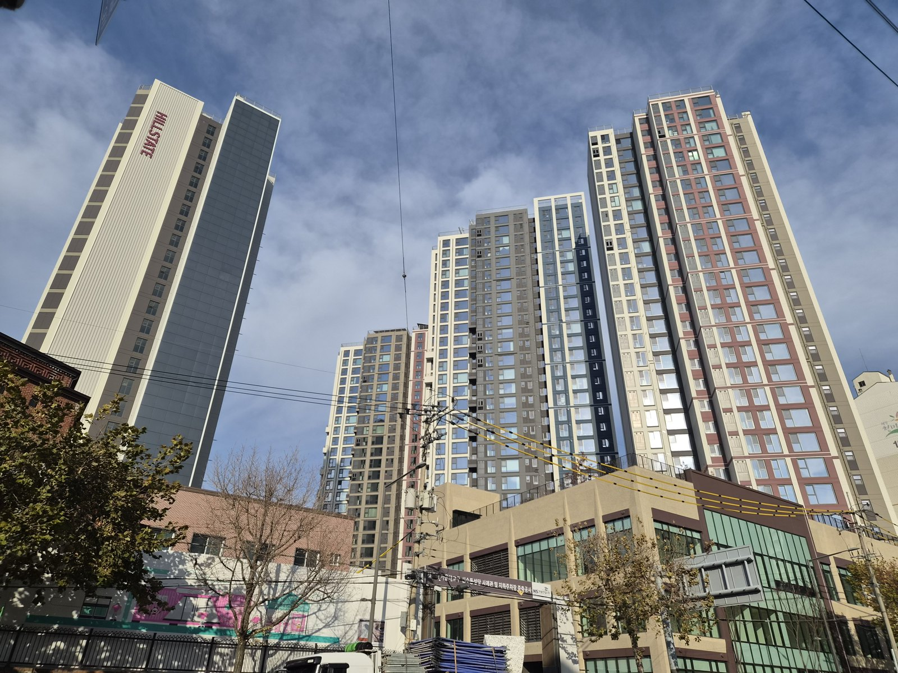
▲ 힐스테이트마포더퍼스트 — 독막로 쪽에서
본 모습 (직접 촬영 2026.11)
| 1. 어떤 단지예요? |
| 항목 | 내용 |
| 위치 | 마포구 신수동 (독막로 · 광성고 옆) |
| 규모 | 488세대 (향후 2차 포함 약 700세대 규모라는 얘기도 있어요) |
| 입주 | 2026년 8월부터 |
| 시공 | 현대건설 (힐스테이트) |
| 역 | 6호선 광흥창역 · 경의중앙선 서강대역 (걸어서 이동 가능) |
세대수는 단지 정보 사이트(1차 기준)
2차 규모는 확인되지 않은 이야기라 참고만
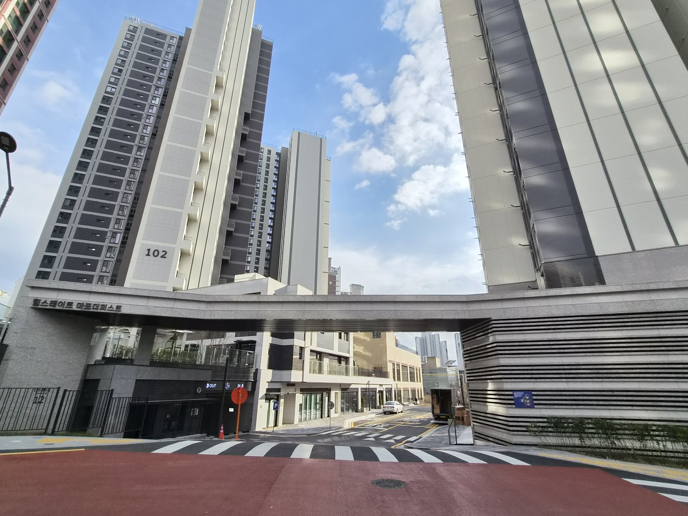
▲ 단지 정문 — 102동과 상가 (직접 촬영)
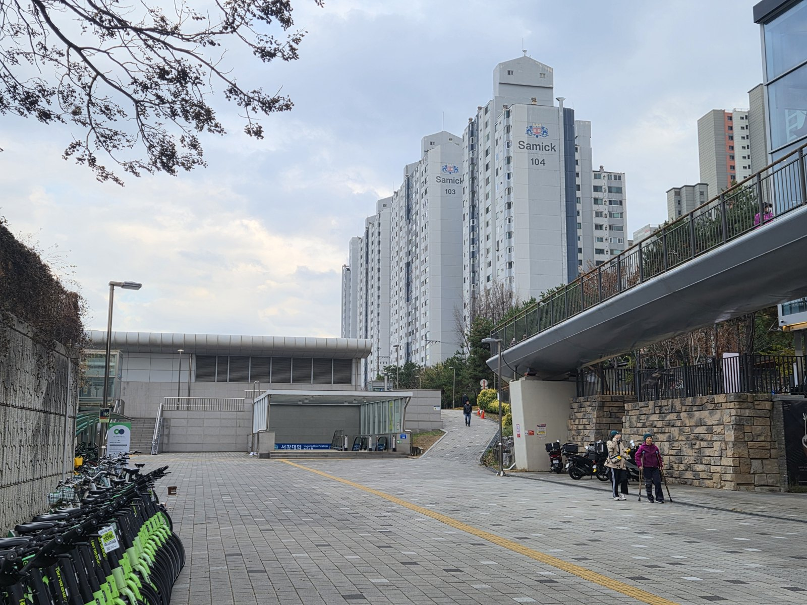
▲ HILLSTATE 사인과
단지 진입로 (직접 촬영)
| 2. 단지 안은 이래요 |
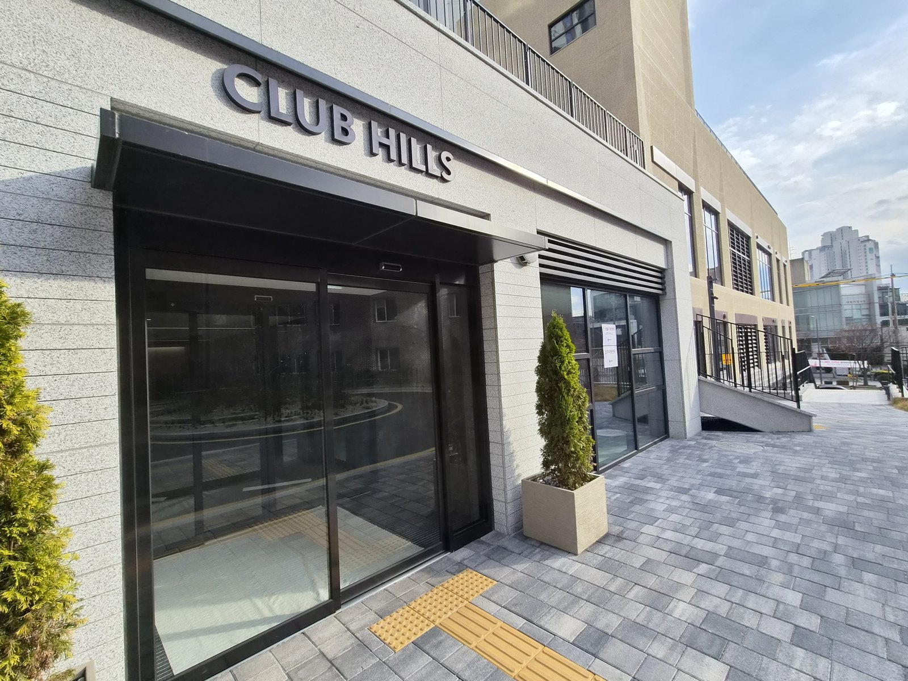
▲ 커뮤니티 CLUB
HILLS 입구 (직접 촬영)
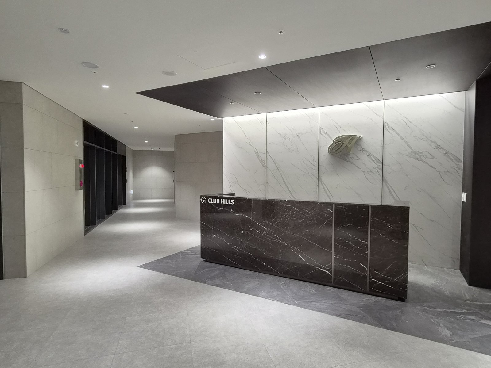
▲ CLUB HILLS 안내데스크 (직접 촬영)

▲ 동과 커뮤니티를 잇는
지하 연결 통로 (직접 촬영)

▲ CLOUD 놀이터 —
뒤로 광성고가 바로 보여요 (직접 촬영)
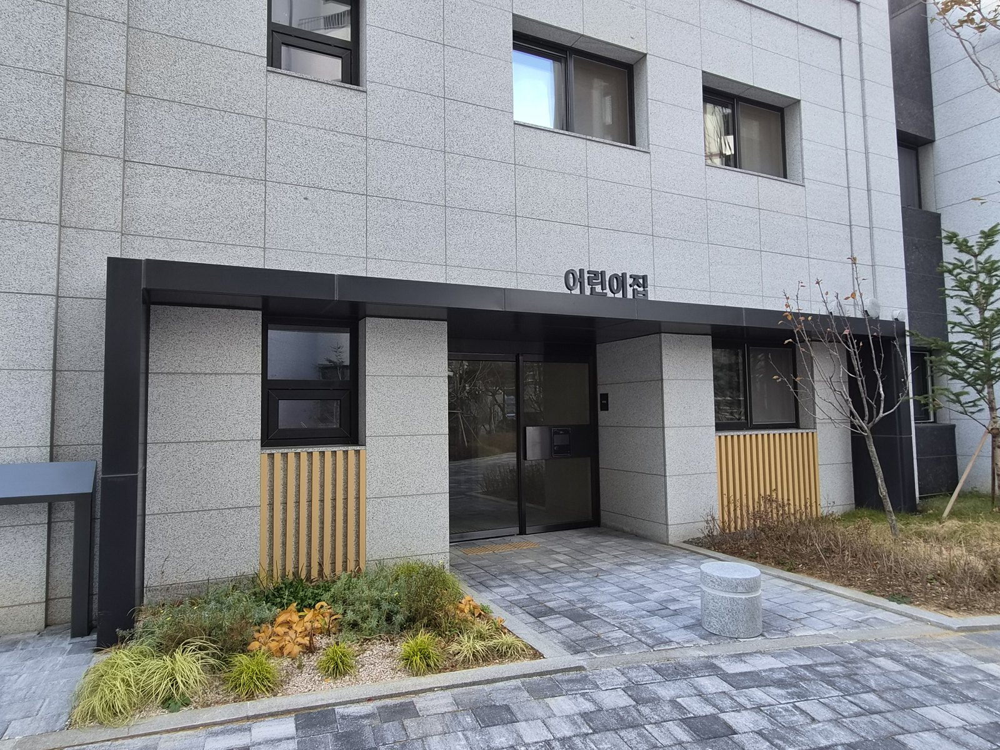
▲ 단지 안 어린이집 (직접 촬영)
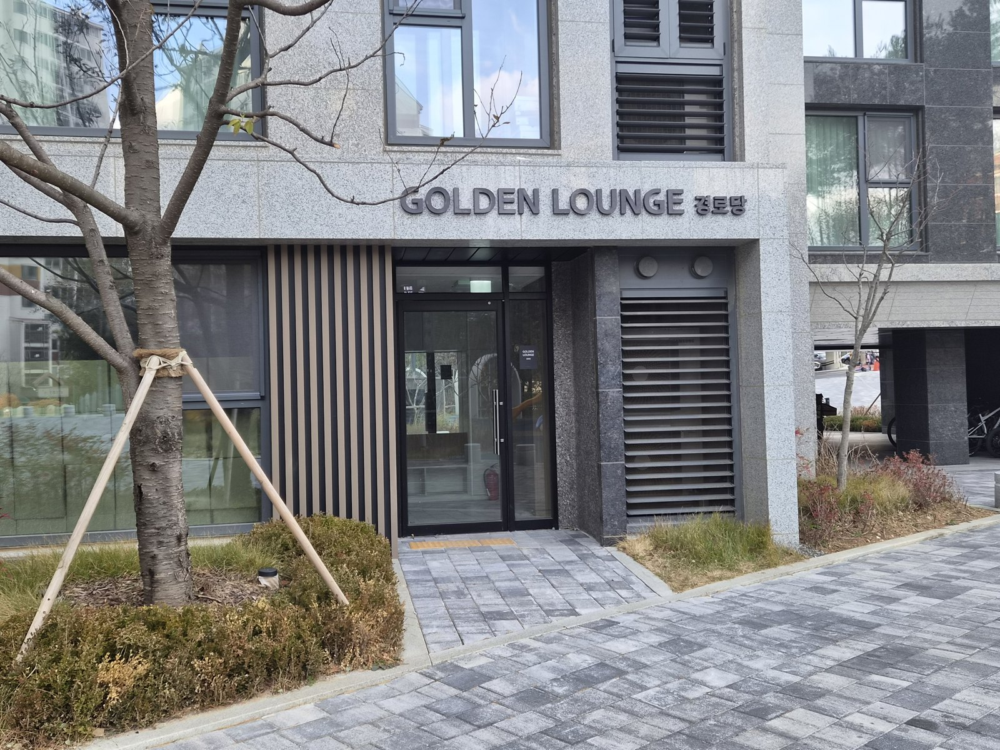
▲ 경로당 GOLDEN
LOUNGE (직접 촬영)
✔ 커뮤니티 CLUB HILLS는
동에서 지하 통로로 바로
이어져요 — 비 오는 날에도
밖에 안 나가고 갈 수 있어요
✔ 단지 안에
어린이집·놀이터·경로당까지 갖춰서,
아이 있는 집부터 부모님 모시는
집까지 두루 맞는 구성이에요
| 3. 교통 — 역이 두 개예요 |
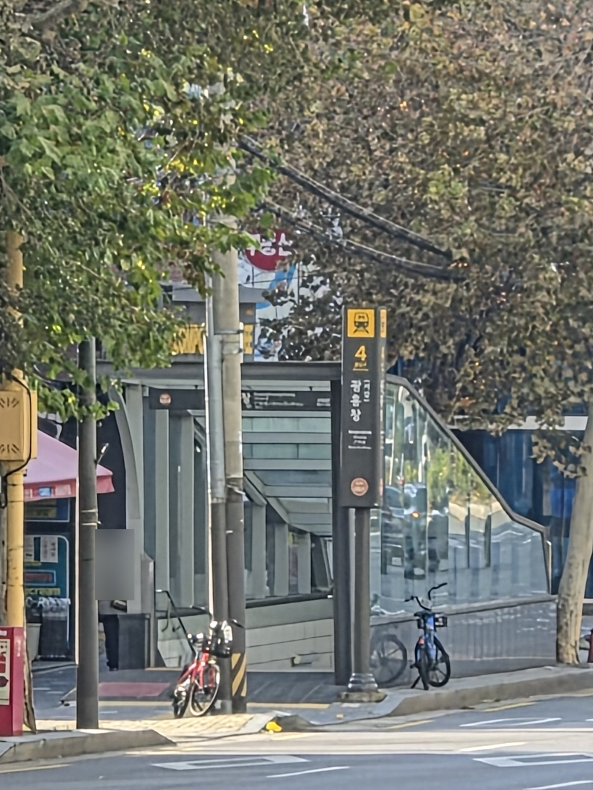
▲ 6호선 광흥창역 4번 출구 (직접 촬영)
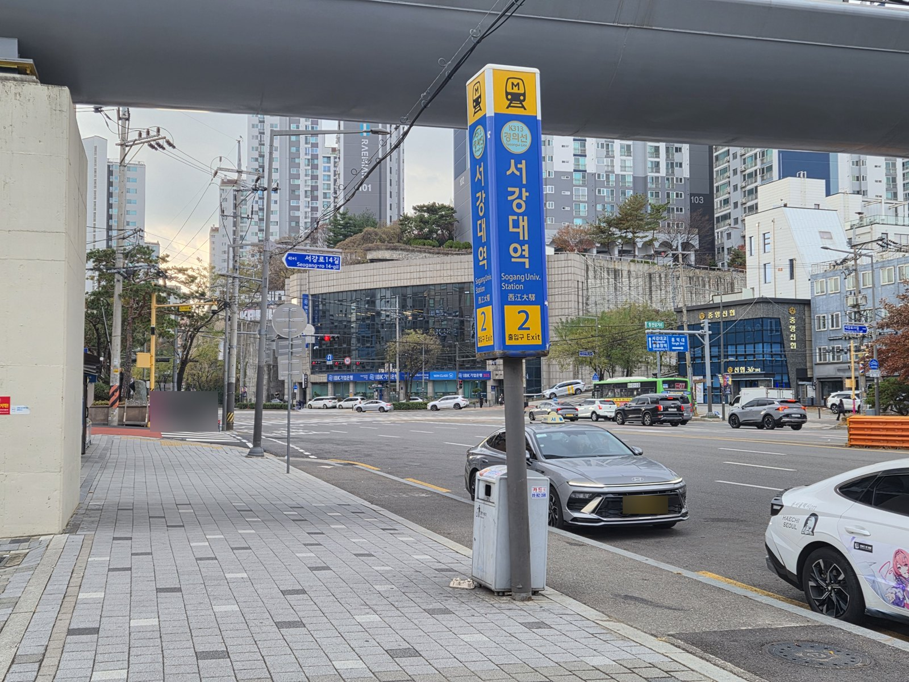
▲ 경의중앙선 서강대역 2번 출구 (직접 촬영)
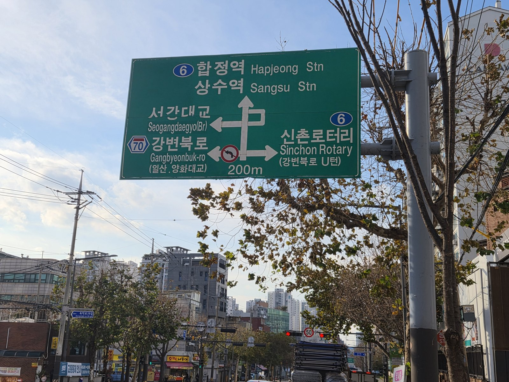
▲ 단지 앞 도로표지판 —
합정·서강대교·강변북로·신촌로터리 (직접 촬영)
✔ 6호선(광흥창)과
경의중앙선(서강대)을
같이 쓰고,
서강대교만 건너면 여의도예요
✔ 강변북로 진입도
가까워서 차로 다니기도 편해요
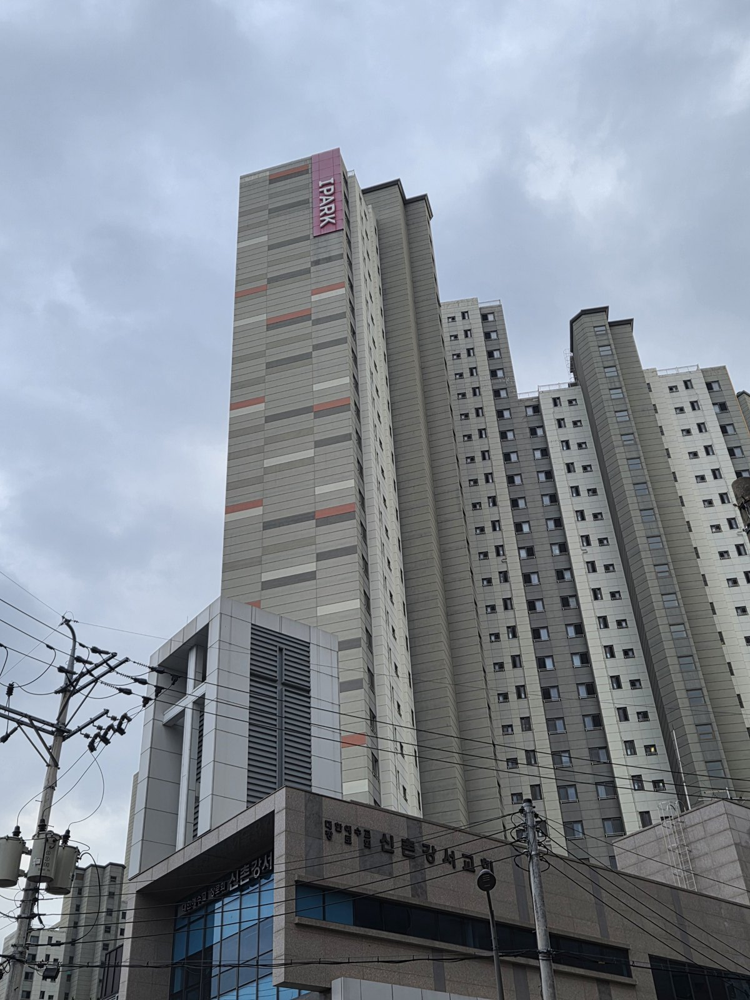
▲ 단지 바로 옆 광성고등학교 (직접 촬영)
| 4. 전세 — 입주장에 어떻게 계약됐나 |
| 계약 월 | 59㎡ 전세 | 84㎡ 전세 |
| 6~7월 (입주 전) | 8억 5,000 ~ 9억 | 10억 ~ 11억 5,000 |
| 8~9월 (입주 시작) | 8억 3,000 ~ 8억 5,000 | 7억 7,000 ~ 12억 (중위 약 10억) |
| 10월 | - | 7억 9,000 ~ 11억 (중위 9억 5,000) |
| 11월 | - | 9억 3,000 (1건) |
국토부 전월세 실거래
월세 0원 계약
2026.6~11 계약분 (11.26 조회)
최근분은 신고가 더 늘 수 있어요
✔ 입주 전후 넉 달에
전세 계약이 몰렸고,
84㎡는 같은 시기에
7억 7천~12억까지 벌어졌어요
✔ 잔금이 급한 집은 낮게,
여유 있는 집은 제값을
받은 흐름이에요.
지금은 9억 중반~10억이
중심이에요
| 5. 매매, 그리고 옆 단지와 비교 |
| 단지 | 84㎡ 매매 | 84㎡ 전세 중위 |
| 힐스테이트마포더퍼스트 (2026) | 16억 2,000만 ~ 22억 9,500만 (중개거래 6건, 26.8~10) · 중위 약 19억 | 약 10억 |
| 마포아이파크포레 (옛 신촌숲아이파크, 2019) | 24억 ~ 26억 8,000만 (26.6~9, 8건) · 중위 약 24억 9,000만 | 약 11억 |
국토부 실거래
(2026.6~11 계약, 11.26 조회)
직거래
3건(16억 5,000만~16억 9,000만)·해제
1건 제외
더퍼스트는 입주 초기라 층·타입별 차이가 커요
✔ 84㎡는 입주 직후 8월에
16억대, 9월엔 22억
9,500만(19층)까지 —
같은 평형에서 6억 넘게 벌어졌어요
✔ 59㎡는 10월에
17억(25층, 중개거래)
거래가 있어요
✔ 바로 옆
마포아이파크포레(옛 신촌숲아이파크)보다
매매는 아직 낮게 거래됐고,
전세는 비슷한 수준이에요
✔ 입주 1년이 안 돼서 시세가
자리 잡는 중이에요.
숫자 한두 건으로 판단하기보다
동·층별 호가를 같이 보세요
| 6. 착한언니 체크 |
전세로 들어간다면
✔ 입주장이 끝나 가는
지금은 10억 안팎이
기준 · 2년 뒤 만기가
한꺼번에 돌아오는 단지예요
매수를 생각한다면
✔ 서울 전역 토지거래허가 —
실거주 요건 확인
· 거래가 적어 동·층별
비교가 꼭 필요해요
주변 개발도 같이
✔ 근처 신수동 250번지
일대에 신속통합 재개발
추진준비위원회가
생겼어요 (아직 초기 단계)
| 7. 정리하면 |
✔ 힐스테이트마포더퍼스트:
신수동 488세대,
2026년 8월 입주,
광흥창역·서강대역
✔ 84㎡ 전세 9억 중반~10억,
매매 16~23억
(중위 약 19억)
✔ 옆 마포아이파크포레보다
매매는 아직 낮고 전세는 비슷
신수동·광흥창 쪽 매수·전세 상담 편하게 남겨 주세요.
| 📝 착한언니 현장 노트 |
광흥창역에서 서강대역까지
단지 주변을 직접 걸어봤어요.
새 단지답게 커뮤니티와
지하 연결 통로가
깔끔했고, 광성고도
단지 바로 옆이에요.
| 📊 착한언니복덕방 실거래 도구 단지 시세 · 내 예산 진단 리포트 신촌 오피스텔 · 청약까지 중개사가 매일 보는 시세표, 그대로 열어 드려요 👉 unnizip.kr/app |
새 글 알림을 받고 싶으시다면
블로그 이웃 추가 해 두세요.
공덕 라첼스 입주장 글도
같이 보세요.
🏢 매수·매도·전세 상담은
카카오톡 채널 착한언니복덕방에
「단지·평형·예산」을 남겨 주세요.
동·층까지 비교해 드려요.
인스타그램 @goodsister4080
이런 내용을 카드뉴스로 정리해요
쉽고 꾸준하게, 꼭 부자되세요!
────────────────
출처: 국토부
실거래(2026.11.26 조회)
단지 정보 사이트
사진은 직접 촬영(얼굴·번호판 가림)
이 글은 투자 권유가 아니에요
착한언니복덕방 | 신촌자이엘라
& 마포그랑자이 부동산
4인 전원 공인중개사
중개보조원 없음
중개사무소:
마포그랑자이(착한언니)부동산공인중개사사무소
대표 공인중개사: 신혜선
등록번호 11440-2022-00085
소재지: 서울특별시 마포구 대흥로 175,
상가4동 102호 일부 (대흥동)
연락처: 02-707-3434
서울시 지정 글로벌 부동산중개사무소
English available
카카오톡 채널:
pf.kakao.com/_xcxoBxnX
붙여넣는 법 (PC 스마트에디터 ONE)
- ① 본문 전체 복사 → 글쓰기 화면 본문에 Ctrl+V
- ② 표·굵게·글자색·형광·가운데 정렬은 그대로 들어가요 (붙여넣은 뒤 표 색이 빠지면 표 선택 → 셀 배경색만 다시 지정)
- ③ 주황 점선 문장은 인용구로 바꿔 주세요: 붙여넣은 문장 지우고 → 상단 [인용구] → 오른쪽 목록의 「문장 복사」로 붙여넣기
- ④ 사진은 붙여넣기로 안 들어가요 → 회색 「▲ 설명」 줄 바로 위에 오른쪽 「이미지 내려받기」 파일을 올려 주세요 (▲ 줄은 사진 설명으로 그대로 두면 돼요) · ✍️ 빨간 줄 = 직접 채울 자리
- ⑤ 맨 아래 법정 표시는 「내 템플릿」에 저장해 둔 서명과 같아요 — 템플릿을 썼다면 이 부분은 지워도 돼요
인용구로 바꿀 문장
- 인용구 · 기본 한 줄 요약 신수동 488세대 · 2026년 8월 입주 · 84㎡ 전세 중위 10억 · 84㎡ 매매 16억~23억 (중개거래) · 광흥창역·서강대역 사이
이미지 내려받기 (직접 업로드)
- 힐스테이트마포더퍼스트 — 독막로 쪽에서 본 모습 (직접 촬영 2026.11)
- 단지 정문 — 102동과 상가 (직접 촬영)
- HILLSTATE 사인과 단지 진입로 (직접 촬영)
- 커뮤니티 CLUB HILLS 입구 (직접 촬영)
- CLUB HILLS 안내데스크 (직접 촬영)
- 동과 커뮤니티를 잇는 지하 연결 통로 (직접 촬영)
- CLOUD 놀이터 — 뒤로 광성고가 바로 보여요 (직접 촬영)
- 단지 안 어린이집 (직접 촬영)
- 경로당 GOLDEN LOUNGE (직접 촬영)
- 6호선 광흥창역 4번 출구 (직접 촬영)
- 경의중앙선 서강대역 2번 출구 (직접 촬영)
- 단지 앞 도로표지판 — 합정·서강대교·강변북로·신촌로터리 (직접 촬영)
- 단지 바로 옆 광성고등학교 (직접 촬영)


발행 정보
- 시리즈: 【마포·서대문 아파트】 — 제목 맨 앞에 그대로 붙여요
- 제목(BEST): 【마포·서대문 아파트】 힐스테이트마포더퍼스트 입주 3개월｜전세 10억 안팎, 단지·커뮤니티 직접 가봤어요
- 제목(대안): 【마포·서대문 아파트】 힐스테이트마포더퍼스트 전세·매매 시세 2026｜광흥창역 신축, 마포아이파크포레와 비교
- 태그: 힐스테이트마포더퍼스트, 힐스테이트마포, 신수동아파트, 광흥창역아파트, 서강대역아파트, 마포아이파크포레, 신촌숲아이파크, 마포신축, 입주장전세, 마포부동산, 마포공인중개사, 대흥동부동산, 공덕부동산, 마포그랑자이부동산, 착한언니복덕방
- 실거래: 국토부 API로 다시 조회해 반영 (11.26) — 매매 중개거래 6건·직거래 3건 구분 · 커뮤니티 이용료·관리비는 확인 못 해서 사진 설명으로만
- 사진 15장 (11/25 촬영): 번호판·행인 가림 · 서강대역 주변 단지(삼익·금호·래미안·IPARK) 사진은 다른 글용으로 보관